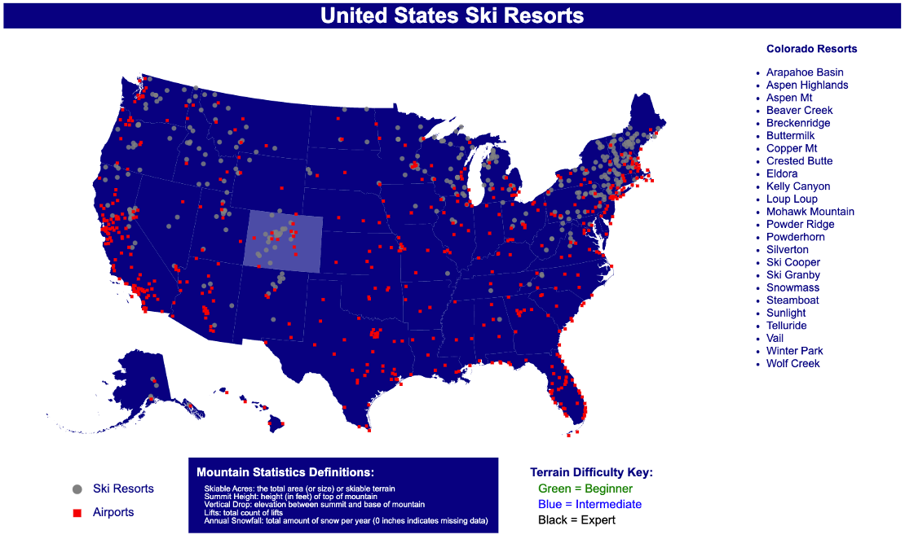

Data Science Coursework Portfolio
Sample projects from data science classes at UMass Amherst
Machine Learning (CS589)
Course Description
This course will introduce core machine learning models and algorithms for classification, regression, clustering, and dimensionality reduction. On the theory side, the course will cover the mathematical foundations behind the most common machine learning algorithms. It will focus on understanding models and the relationships between them. On the applied side, the course will focus on effectively using machine learning methods to solve real-world problems with an emphasis on model selection, regularization, design of experiments, and presentation and interpretation of results.
Course Topics
This course covered a range of machine learning topics including supervised vs. unsupervised learning, regression vs. classification, parametric vs. non-parametric models, probability and estimation, Bayes rule, maximum liklihood estimators, maximum a posteriori estimators, k-nearest neighbors, decision trees, naïve Bayes, linear discriminant analysis, logistic regression, gradient methods, generalization, training error, overfitting vs. underfitting, bias-variance tradeoff, regularization, support vector machines, ensemble models, random forests, bagging, boosting, linear regression, ridge and lasso, ordinary least squares, regression trees, neural networks, deep learning, dimensionality reduction, singular value decomposition, principal component analysis, and clustering algorithms. The majority of the coursework involved implementing algorithms from scratch using python and analyzing the outputs of the models. Sample code from class assignments can be found on my github at the link below.
Sample reports from the class:
- KNN, Decision Trees, and Probability/Estimation
- Naïve Bayes, Probabilistic Classification, and Logistic Regression
- Support Vector Machines and Ensemble Methods
- Linear Regression and Neural Networks
- Convolutional Neural Networks, SVD, and PCA
- Final Project: Kaggle Competition (Pawpularity Contest)
Statistical Computing (STAT535)
Course Description
This course provides an introduction to fundamental computer science concepts relevant to the statistical analysis of large-scale data sets. Students will collaborate in a team to design and implement analyses of real-world data sets, and communicate their results using mathematical, verbal and visual means. Students will learn how to analyze computational complexity and how to choose an appropriate data structure for an analysis procedure. Students will learn and use the python language to implement and study data structure and statistical algorithms. This course makes use of the MIT OCW Introduction to Computer Science and Programming in Python and the MIT OCW Introduction to Algorithms.
Course Topics
This course covered many statistical computing techniques such as functional programming, simulation, visualization, relational databases, algorithms, and data structures. The assignments consisted of writing code in python for these topics. For our final project, we created a movie recommendation system and ran a simulation to understand the self-modifying effects of recommendation algorithms (final report and presentation). Sample code from class can be found on my github at the link below.
Data Visualization (CS571)
Course Description
Information visualization is an area of research that helps people analyze and understand data using visualization techniques. The multi-disciplinary area draws from other areas of science, including human-computer interaction, data science, psychology, and art, to develop new visualization methods and understand how (and why) they are effective.
Course Topics
The objectives of this course included learning the principles of information visualization, understanding a wide variety of visualizations and which types are appropriate for certain types of data, developing skills for critiquing visualization techniques, and implementing our own visualizations. The main deliverable for this course was a dashboard on a topic of our choosing using D3 and HTML. Our group created a map of all of the ski resorts across the United States.

Preview of our dashboard. Link to the Github repository is below.
Regression Modeling (STAT625)
Course Description
Regression is the most widely used statistical technique. In addition to learning about regression methods this course will also reinforce basic statistical concepts and introduce students to "statistical thinking" in a broader context. This is primarily an applied statistics course. While models and methods are written out carefully with some basic derivations, the primary focus of the course is on the understanding and presentation of regression models and associated methods, data analysis, interpretation of results, statistical computation and model building. Topics covered include simple and multiple linear regression; correlation; the use of dummy variables; residuals and diagnostics; model building/variable selection, regression models and methods in matrix form. With time permitting, further topics include an introduction to weighted least squares, regression with correlated errors and nonlinear (including binary) regression.
Course Overview
In this course, we covered the content of Applied Linear Regression (Fourth Edition) by Sanford Weisberg. We used the R programming language to complete assignments which included problems from the textbook and generated by our professor. We also completed a final project of our choosing. For our project, we analyzed a dataset of data from the UMass men's ice hockey team. The data came from Catapult Sports sensors worn by the players during practices and games (final report). The assignments were submitted as R markdown files, which can be accessed by going to the link below.